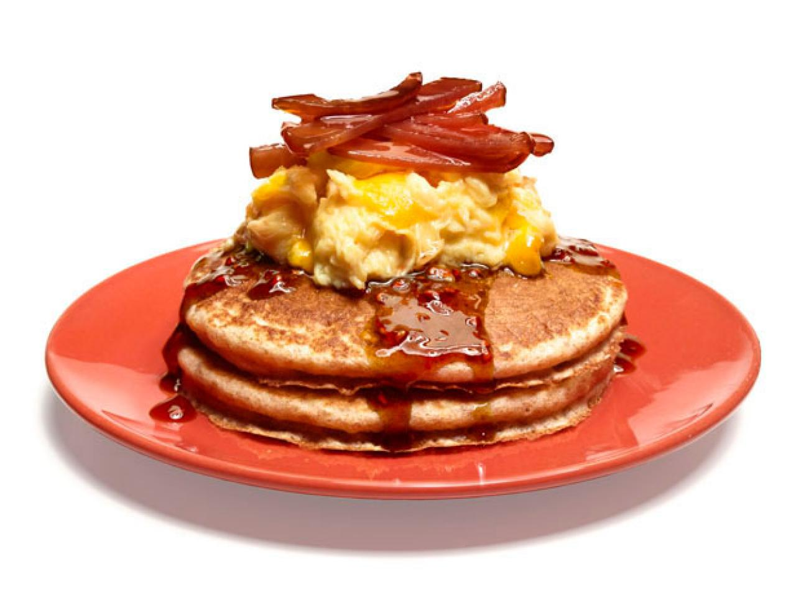
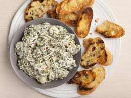
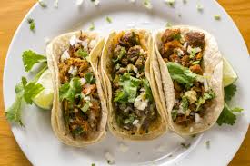
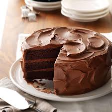
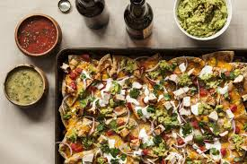

| Ingredients | Directions |
|---|---|
| Bacon | 1: Bacon should be started in a cold pan, so before you turn on the heat, lay out your strips on the pan. You can place them so they are touching and crowd the pan a little as the bacon will shrink as it cooks but do not overlap too much. Bacon cooks best slowly over low heat, so turn your burner on low. Soon the bacon will begin to release some of its fat. When it starts to buckle and curl, use the tongs to loosen the strips and turn each slice to cook on the other side. Keep flipping and turning the bacon so that it browns evenly. Pour off grease carefully: If the bacon is very fatty and your pan is filling up with grease, you can remove some by carefully suctioning it off with a bulb baster and squeezing it into a glass or metal container. Some people just spoon off the excess with a metal spoon. You can also pour off some of the grease but be very careful when you do this as spilled grease can cause a grease fire. I usually turn off the flame when I pour off the grease and I check be sure that none of it has dribbled down the sides of the pan. In any case, be sure that you pour it into a sturdy glass, metal, or ceramic container. Cook until the bacon is done: When is the bacon done? That depends. Some people like their bacon extra crispy and others like it a little loose and flappy. It's important to know that your bacon will continue to cook some when you pull it from the pan and will stiffen up a little upon cooling. In general you will want to see even browning and make sure that the meat part has lost some of its raw redness. Let the cooked bacon drain: Using your tongs, remove the pieces from the pan and onto your paper bag/towels or newspapers to drain. Cook the remaining bacon in batches: If you have more bacon to cook, you can simply drain the excess grease and add more bacon as you remove pieces. If the pan has developed a browned crust on the bottom, let the pan cool down and wipe it clean before continuing. |
| Pancakes | Great pancakes start with a great batter. A well-seasoned, well-balanced batter, mixed properly (yes, there’s a way to do that) makes for a perfect pancake every time. The instructions below are for a classic buttermilk pancake, but we’ll take you through flour experiments and mix-ins later on. The correct ratio of eggs to buttermilk will create a tangy, custard-like interior; there is no true rule of thumb for this, but our master recipe below will give you a good template. Baking powder and baking soda will build the ideal lift and a light texture, and the right amount of sugar will help crisp the edges without crossing into dessert territory. And yes, there is quite a bit of salt. But if you try to cut back, you will miss it. As with any food, pancakes need proper seasoning. Whisk all the dry ingredients together in a large bowl, then create a well in the center to pour the buttermilk and crack the eggs (no need to combine the eggs with the buttermilk first – there are only so many mixing bowls you should wash this early in the day). Starting from the center and moving towards the edges, incorporate all the dry ingredients This develops gluten, which will make a tough pancake. Do not be afraid of a few lumps here. They’ll take care of themselves. Cooking pancakes properly requires patience and all your senses. Listen for the slight sizzle as the batter hits the skillet, look for tiny bubbles forming on top, and smell for browning (before it burns). Finding the correct heat setting for cooking pancakes, which is medium-low, is tricky. Too hot, and you’ll likely burn the exteriors before the insides get cooked; too low and there will be no sizzle and no crispy edges. The temperature truly does need to be just right. Most oven burners are so different that medium-low is not an exact science, so play in the space somewhere in the middle of your middle and lowest setting. When using a large cast-iron skillet or griddle, heat it on low for a few minutes to get the heat evenly distributed. Just before ladling in your batter, turn it up to medium–low. To test if the skillet is ready, hit it with a small spoonful of batter. It should sizzle right away. If it doesn’t, turn the heat up just slightly. If the skillet starts to smoke, the heat is too high, so turn off the burner and wait a few minutes before trying again. It should go without saying, but pancakes are not the time to use restraint, especially when it comes to your cooking fat. This is by no means a deep fry, but you do need plenty of fat to get the exterior properly browned and those edges wonderfully crisped, which are arguably the best part. Yes, we all love butter, and it definitely belongs inside and on top of your pancakes. But butter will burn at the heat needed to cook a proper pancake, so choose an oil with a high smoke point. Vegetable or canola will do, but if you can get your hands on some coconut oil (refined or unrefined), you’ll be rewarded with an almost buttery flavor and delightfully subtle, nutty, tropical vibes. Avoid olive oil, though. The perfectly sized pancake cooked at home falls somewhere between the ones you might find at your favorite breakfast spot and the gimmicky silver-dollar pancake: about 4 inches across, the diameter of a generously sized orange. The best tool for ladling out properly-sized pancakes is a measuring cup, either 1/4 or 1/3 cup, depending on your preference. When scooping the batter into the skillet, resist the temptation to make too many pancakes at once. The batter will spread and puff slightly, so make sure you are spacing them about 1 inch apart. This gives them room to grow s without bleeding into each other, and it gives you plenty of space to flip. For good flipping technique, timing is everything. Wait too long and you’ve got blackened bottoms, but be too impatient and you’ll end up with a mess of batter everywhere. Each side will take about 2 to 3 minutes, but look for visual cues as well. As the pancake cooks, the top will start to form many tiny bubbles and appear just set around the edges. You can always give it a little peek, but avoid moving the pancakes around too much during this stage. The baking soda and baking powder need time to activate and create gas, which makes air, which makes for a delightfully fluffy pancake. Your reward for being the cook is a pancake called “the tester.” This is the first pancake of the lot, and it will almost certainly not turn out well. But do not let this get you down, because it is a blessing in disguise: a chance to make a misshapen, slightly burned and poorly flipped pancake, and learn from your mistakes. Adjust your heat, increase the fat in the pan if need be, and keep cooking. |
| Eggs | Ingredients 4 EGGS, 1/4 cup milk, Salt and pepper, 2 tsp. butter, >>>Directions<<< BEAT eggs, milk, salt and pepper in bowl until blended. HEAT butter in large nonstick skillet over medium heat until hot. POUR IN egg mixture. As eggs begin to set, GENTLY PULL the eggs across the pan with an inverted turner, forming large soft curds. CONTINUE cooking – pulling, lifting and folding eggs – until thickened and no visible liquid egg remains. Do not stir constantly. REMOVE from heat. SERVE stove top scrambled eggs. |

| Ingredients |
Directions |
|---|---|
| 2 tablespoons olive oil
1 large garlic clove, finely chopped 1 12-ounce bunch fresh spinach, finely chopped (or 1 10-ounce package frozen spinach, defrosted, drained and finely chopped) |
1: Heat olive oil in a medium pot over medium heat. Add garlic and cook, stirring until it’s softened and fragrant, about 30 seconds. |
| Pinch crushed red pepper flakes (optional) Kosher salt and black pepper 1 (14-ounce) can quartered artichoke hearts, drained and coarsely chopped |
2: Add spinach to pot one handful at a time, letting each handful completely wilt before adding the next. Add crushed red pepper, if using, and season with salt and pepper. Continue to cook, stirring frequently, until most of the liquid from the spinach has evaporated (no need to drain), about 3 minutes. Add artichokes and season with salt and pepper. Cook for a few minutes, just to take the raw edge off the artichokes. |
| 8 ounces cream cheese, cut into 1-inch pieces 4 ounces fresh mozzarella, torn or shredded 4 ounces sour cream or full-fat Greek yogurt |
3: Reduce heat to low and add cream cheese and mozzarella. Using a wooden spoon or spatula, stir until all the cheese has melted, about 3 minutes. Stir in sour cream and pecorino, and season with more salt and pepper. You can certainly eat this dip straight from the pot (or transferred to a serving bowl), but running it under the broiler for a crispy top is also an excellent option. To do so, transfer dip to a small ovenproof skillet (6 to 8 inches). Place in oven and broil until the top is golden and the dip is bubbling, 5 to 8 minutes. Let sit a minute or two before serving. |

| Ingredients | Directions |
|---|---|
| 1 pound lean (at least 80%) ground beef, 1 cup Old El Paso Thick 'n Chunky salsa, 10 Old El Paso taco shells, 1/2 head lettuce, shredded, 1 medium tomato, chopped (3/4 cup), 1 cup shredded Cheddar cheese (4 ounces) | Cook beef in 10-inch skillet over medium heat 8 to 10 minutes, stirring occasionally, until brown; drain. |
| Stir salsa into beef. Heat to boiling, stirring constantly; reduce heat to medium-low. Cook 5 minutes, stirring occasionally. Pour beef mixture into large serving bowl. |
|
| Heat taco shells as directed on package. Serve taco shells with beef mixture, lettuce, tomato and cheese. |

| Ingredients | Directions |
|---|---|
| 2 cups sugar
1-3/4 cups all-purpose flour 3/4 cup HERSHEY'S Cocoa 1-1/2 teaspoons baking powder 1-1/2 teaspoons baking soda 1 teaspoon salt 2 eggs 1 cup milk 1/2 cup vegetable oil 2 teaspoons vanilla extract 1 cup boiling water |
Heat oven to 350°F. Grease and flour two 9-inch round baking pans. 2. Stir together sugar, flour, cocoa, baking powder, baking soda and salt in large bowl. Add eggs, milk, oil and vanilla; beat on medium speed of mixer 2 minutes. Stir in boiling water (batter will be thin). Pour batter into prepared pans. 3. Bake 30 to 35 minutes or until wooden pick inserted in center comes out clean. Cool 10 minutes; remove from pans to wire racks. Cool completely. Frost with "PERFECTLY CHOCOLATE" CHOCOLATE FROSTING. Makes 12 servings |

| Ingredients | Directions |
|---|---|
| 2 tablespoons olive oil, plus more for grilling 2 tablespoons lime juice 2 cloves garlic, minced 1 1/2 teaspoons chili powder /t1/2 teaspoon kosher salt 1/4 teaspoon black pepper 1 1/2 pounds boneless, skinless chicken breasts, pounded to 1-inch thickness For the pinto bean dip: 1 tablespoon olive oil 1/3 cup chopped red onion 2 cloves garlic, chopped 3 tablespoons chopped red-bell pepper 3/4 teaspoon chili powder 1 15-ounce can low-sodium pinto beans, rinsed and drained 1/2 tablespoon red-wine vinegar 1/4 teaspoon dried oregano 3/4 teaspoons kosher salt 1/4 teaspoon freshly ground black pepper For the nachos: 1 13-ounce bag restaurant-style tortilla chips 1 to 2 jalapeños (depending on heat), halved lengthwise and thinly sliced 8 ounces sharp cheddar cheese, grated (about 2 cups) 8 ounces Monterey jack cheese, grated (about 2 cups) 1 medium tomato, chopped 1/2 small red onion, very thinly sliced Sour cream, for serving Cilantro leaves, for serving |
Grill the chicken:
In a small bowl, whisk the oil, lime, garlic, chili powder, salt, and pepper together. Place the chicken in a resealable plastic bag and pour the marinade over. Toss to coat and marinate for 30 minutes. Heat a lightly oiled grill or grill pan over medium-high heat. Grill the chicken turning once until cooked through, about 4 to 5 minutes per side. Allow to cool, then cut chicken in 1/2-inch cubes. Make the bean dip: In a large skillet over medium heat, heat the olive oil. Add the onion and cook until softened, 4 to 5 minutes. Add the garlic and bell pepper and cook, stirring, until softened, 4 to 5 minutes more. Stir in the chili powder and cook until fragrant, 1 minute more. Remove from heat. To the bowl of a food processor, add the beans, vinegar, oregano, salt, pepper, and 1/4 cup water and pulse to combine. Add the onion mixture and pulse to combine. If necessary, add more water 1 tablespoon at a time and process until smooth. Taste and adjust seasoning. Assemble the nachos: Preheat oven to 400°. Add a small dollop of bean dip to the center of each chip (about 1/4 teaspoon per chip) and divide chips among 2 rimmed baking sheets. Sprinkle evenly with jalapeño slices and cheeses. Bake until cheese is bubbling and melted and the edges of chips are just starting to brown, 8 to 10 minutes. Top with tomato, onion, sour cream, grilled chicken, and cilantro. Serve immediately. |